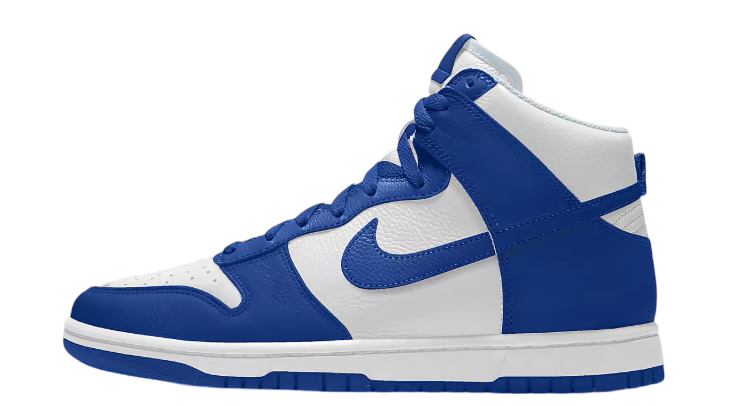

The History of Nike

One of Phil's employees recommended calling his new brand NIKE, nicknamed after the Greek goddess of victory. TO create a logo, Phil went to the closest University, Portland State University. There he grabbed a graphic design student and asked her to design him a logo for the grand total of $35. That student designed the swoosh, a symbol which is now dotted around the globe. Once Phil's contract ended in 1972 the NIKE brand took off. Sales went through the roof and by 1989 Nike became the largest sportswear company in the World.
Bellow is a video capturing Nike's Journey.
To view a Tableau chart illustrating Nike's Sales growth over time click on the Nike botton bellow.